Tutorial 3: Vertical penetration (Cone Penetration Test)¶

Introduction¶
This tutorial walks through a Cone Penetration Test (CPT) simulation, a workhorse problem in offshore geotechnical engineering that is used to calibrate soil parameters against in-situ measurements. This tuto
A rigid cone is pushed quasi-statically \(4.5\) m into a bed of dry sand, and the cone-tip resistance can be compared against centrifuge data such as that of Davidson et al. 1 and Cerfontaine et al. 2. The problem builds on Tutorial 2 and adds four things: an elasto-plastic sand whose stiffness increases with depth, frictional contact, mesh refinement that follows the cone, and an analysis made of two stages.
This tutorial has four sections:
Problem description¶
You will define the soil, the cone, the two loading stages, the solver and the output in the input file. All the inputs to the simulation are defined using the input_data.json file format.
To reduce the computational cost the symmetry of the problem is exploited and therefore only a quarter of the problem is modelled, using the two vertical planes of symmetry through the cone axis. The cone axis runs down the corner of the material domain at \(x = y = 0\), and the two faces that meet there carry roller conditions.
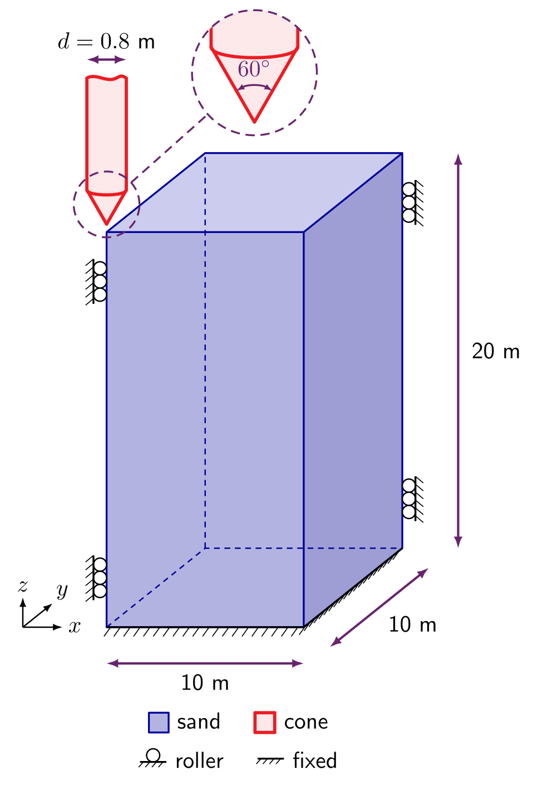
Figure adapted from 3.
Material domain: \(10 \times 10\) m in plan and \(20\) m deep, starting with \(2 \times 2 \times 2\) material points in each element. The base element size is given as \(2.0\) m, but every element size must be a power-of-two multiple of the smallest one - \(0.025\) m at the cone - so the base size becomes \(0.025 \times 2^6 = 1.6\) m and the footprint is rounded up to seven elements, \(11.2 \times 11.2\) m (see how element sizes set the mesh).
Boundary conditions: Rollers on the four vertical faces and a fixed base, at \(x = 0\) and \(y = 0\) these are the symmetry conditions. The soil surface is free.
Material: an elasto-plastic sand. Yield is governed by a frictional cone with a Willam-Warnke deviatoric section, and plastic flow by a Drucker-Prager cone set by the dilation angle, so the flow is non-associated. The elastic behaviour is linear in logarithmic (Hencky) strain. The model is described in isotropic elasto-plasticity. The sand has a relative density of \(D_r = 32\%\), and its parameters come from the Brinkgreve correlations 4:
| Property | Correlation | Value at \(D_r = 32\%\) | Input key |
|---|---|---|---|
| Reference Young's modulus | \(E^{ref} = 60\,000\; D_r/100\) kPa | \(19.2\) MPa | "E": 1.92e7 |
| Friction angle | \(\phi = 28 + 12.5\; D_r/100\) | \(32^\circ\) | "friction angle": 32.0 |
| Dilation angle | \(\psi = -2 + 12.5\; D_r/100\) | \(2^\circ\) | "dilation angle": 2.0 |
| Dry unit weight | \(\gamma = 15 + 4\; D_r/100\) kN/m\(^3\) | \(16.28\) kN/m\(^3\) | - |
| Dry density | \(\rho = \gamma/g\), with \(g = 10\) m/s\(^2\) | \(1628\) kg/m\(^3\) | "density": 1628.0 |
| Stiffness exponent | \(m = 0.7 - D_r/320\) | \(0.6\) | "exponent": 0.6 |
| Earth pressure at rest | \(K_0 = 1 - \sin\phi\) | \(0.4701\) | "reference stress" (below) |
| Poisson's ratio | - | \(0.25\) | "nu": 0.25 |
| Cohesion | - | \(0.3\) kPa | "cohesion": 300.0 |
The density is entered as the unit weight divided by \(10\) m/s\(^2\).
The Young's modulus increases with depth. Brinkgreve's stiffness law is written in terms of the horizontal stress \(K_0 \sigma_v\) and a reference pressure \(p^{ref} = 100\) kPa, whereas MPM3S's stress-dependent stiffness uses the vertical stress \(\sigma_v\). The two are the same when the reference stress is \(p^{ref}/K_0\):
\(\sigma_v\) is calculated from the weight of the soil above each material point's initial position, so each point's stiffness is set once and does not change during the analysis.
Cone: CPT.stl, a cylinder of radius \(r = 0.4\) m with a \(60^\circ\) conical tip, \(10.69\) m long in total and drawn with its tip at the origin. Coulomb friction with \(\mu = 0.33\) acts between the cone and the sand, and the contact penalty is set automatically, as described in Tutorial 2.
Loading: Two static stages:
- Stage 1 - initial stresses: the cone is switched off and gravity is ramped up over 5 load steps.
- Stage 2 - penetration: the cone is placed on the soil surface and pushed down \(10\) mm per load step for 450 load steps (\(4.5\) m), with the mesh refined to \(0.025\) m wherever the cone surface is.
Solver: Newton-Raphson, quasi-static, for both stages.
Input setup¶
The input file is a single JSON object - a human-readable, editable text file. The complete file for this problem can be found here, and every key is described on the input_data.json file format page.
input_data_CPT_dr32.jsonMaterial points¶
- A single \(20\) m layer of Willam-Warnke sand over a \(10 \times 10\) m footprint, with the properties from the Problem description (material points).
- The
"E overburden"block makes the Young's modulus increase with depth (stress-dependent stiffness). "extra capacity": 1.2reserves 20% more storage than the initial material points need, because the refinement around the cone splits material points into smaller ones.
"material points": {
"extra capacity": 1.2,
"element size": 2.0,
"number of material points per element 1": 2,
"material size": { "min": [0.0, 0.0], "max": [10.0, 10.0] },
"layers": [
{
"thickness": 20.0,
"material": { "type": "willam warnke",
"E": 1.92e7, "nu": 0.25,
"friction angle": 32.0, "dilation angle": 2.0, "cohesion": 300.0,
"density": 1628.0,
"E overburden": { "reference stress": 2.12729e5, "exponent": 0.6 } }
}
]
},
Rigid body¶
- The cone is one system with a single point, placed at its tip - the origin of
CPT.stl. - All positions in the file are global, so the point and the STL geometry are given in the same frame.
"offset"shifts the whole cone \(10\) mm in \(-x\) and \(-y\), so its axis sits just outside the corner of the material domain.- All six degrees of freedom are
"fixed", so the cone does not move and its mass and inertia play no part; stage 2 replaces the vertical condition to push the cone down. CPT_mesh.txtstores the tetrahedral mesh of the cone; if it is missing, it is generated from the STL on the first run (STL files).
"rigid bodies": [
{
"offset": [-0.01, -0.01, 0.0],
"points": [
{ "position": [0.0, 0.0, 0.0], "mass": 39989.6, "rotational inertia": [1626001.9, 1626001.9, 3199.2],
"boundary conditions": ["fixed", "fixed", "fixed", "fixed", "fixed", "fixed"] }
],
"stl files": [
{ "name": "cpt", "stl": "CPT.stl",
"mesh cache": "CPT_mesh.txt", "point": 1 }
]
}
],
Contact¶
- Coulomb friction with \(\mu = 0.33\) between the cone and the sand (contact properties).
Stage 1: initial stresses¶
- A static stage with the cone switched off (
"rigid bodies": "off") (analysis stages). - Gravity is ramped from zero to its full value over 5 load steps, setting up the initial stresses in the sand.
"adaptivity": {"type": "none"}uses the base mesh: elements of the \(1.6\) m base size wherever there are material points, and coarser elements in the empty space above the soil (adaptivity).- The four vertical faces are rollers and the base is fixed (boundary conditions).
- The top face is fixed too, but it lies at twice the soil depth, in the empty space above the soil, so the soil surface stays free.
Stage 2: cone penetration¶
- The cone is switched on.
"rigid body surface placement": "on"moves it vertically at the start of the stage, so that its tip rests on the soil surface."load": "full"keeps gravity at its full value throughout."rigid body boundary conditions"replaces the conditions of point 1 of system 1 - the cone - for this stage only, prescribing a vertical displacement of \(-0.01\) m per load step: over the 450 load steps the cone penetrates \(4.5\) m (rigid body boundary conditions)."rigid body surface"adaptivity refines the elements the cone surface passes through to \(0.025\) m at every step, so the fine mesh travels down with the cone (adaptivity).- For a quicker, coarser first run, use
"element size": 0.1.
{
"type": "static",
"load steps": 450,
"load": "full",
"rigid bodies": "on",
"rigid body surface placement": "on",
"adaptivity": {
"type": "rigid body surface",
"element size": 0.025
},
"rigid body boundary conditions": [
{ "system": 1, "point": 1, "boundary conditions": ["fixed", "fixed", { "prescribed": -0.01 }, "fixed", "fixed", "fixed"] }
],
"boundary conditions": { "min": ["roller", "roller", "fixed"], "max": ["roller", "roller", "fixed"] }
}
],
Solver¶
- Newton-Raphson iterations to a tolerance of \(10^{-6}\) in each load step (solver).
- A step that has not converged after 20 iterations is retried with half the increment.
"ghost factor"and"ghost factor mass"set the strength of the ghost stabilisation of poorly filled elements at the edges of the soil."poor factor": 0.25treats elements less than a quarter full as poorly filled.
Output¶
- VTK files for ParaView are written to
vtk_CPT_dr32every \(0.5\%\) of each stage's load steps: every 2 load steps in the 450 of stage 2 (output). - CSV files go to
csv_CPT_dr32every \(0.25\%\): every load step here. - The rigid-body CSV output includes the
reaction forceon the cone - the total force needed to push it, made up of the resistance at the tip and the friction along the sleeve. - Cone resistance explains why the tip resistance cannot be calculated from it, and how to find the force on the tip alone.
"output": {
"vtk": "on",
"vtk directory": "vtk_CPT_dr32",
"vtk percent": 0.5,
"vtk material point fields": ["displacement", "velocity", "stress", "strain", "volume"],
"vtk rigid body fields": ["position", "velocity", "reaction force"],
"csv": "on",
"csv directory": "csv_CPT_dr32",
"csv percent": 0.25,
"csv material point fields": ["initial position", "position", "stress"],
"csv rigid body fields": ["position", "velocity", "reaction force", "reaction moment"]
}
Deploying and running the problem¶
MPM3S is written in the Julia programming language. See the installation guide for installing Julia and MPM3S, and Tutorial 1 for a first, small run.
Working in the MPM3S folder
Julia runs in the MPM3S folder - the folder you downloaded - throughout this tutorial, and every path in the commands and scripts is relative to it. The input file is read from validation_data_and_jsons/input_data_CPT_dr32.json, and the output folders vtk_CPT_dr32 and csv_CPT_dr32 are written to, and read back from, the MPM3S folder. The CSV files exported from ParaView are saved in vtk_CPT_dr32 too.
terminalSetting up the problem¶
The input file for this tutorial comes with MPM3S, as validation_data_and_jsons/input_data_CPT_dr32.json, together with the cone geometry, CPT.stl, and its mesh cache, CPT_mesh.txt; the input file is the same as the complete input file. The STL and mesh-cache paths in the input file are relative to the input file, so the files must stay in the same folder.
As in Tutorial 1, open a terminal, start Julia with every CPU thread available (-t auto), then move into the folder where you downloaded MPM3S, activate it, install its dependencies with Pkg.instantiate() and load MPM3S. The output folders vtk_CPT_dr32 and csv_CPT_dr32 are created in the MPM3S folder.
Running the problem¶
Julia is now running in the MPM3S folder and MPM3S loaded. The JSON file for this problem is loaded with MPM3S and is stored in the folder validation_data_and_jsons, the simulations are started with:
This is a large analysis: with \(0.025\) m elements around the cone it is intended for a GPU or an HPC node. On a workstation without a GPU, set "GPU": "off" and use "element size": 0.1 in stage 2.
Reading the output¶
The progress line works as in Tutorial 1, showing stage 1/2 while the initial stresses are set up and stage 2/2 during penetration.
At the start of stage 2, MPM3S reports the rigid body surface placement: the cone tip (body base, at the origin of CPT.stl) is moved up by Δz to the soil surface (material top), which has settled to \(19.85\) m under the weight of the sand.
During penetration N grows as the mesh is refined around the cone. Load steps that do not converge are retried with half the increment (cuts), and material points next to the cone that become too distorted are deleted (del).
$ julia -t auto
julia> cd("path/to/MPM3S")
julia> using Pkg; Pkg.activate(".")
Activating project at `path/to/MPM3S`
julia> Pkg.instantiate()
julia> using MPM3S
julia> MPM3S.non_linear_solve("validation_data_and_jsons/input_data_CPT_dr32.json");
stage 1/2 ████████████ 100.0% t 1.0/1.0 step 6 Δt 0.2 NR 3 cuts 0 del 0 N 1640
[ Info: rigid body surface placement: body base 0.0 → material top 19.8474 Δz = 19.8474
stage 2/2 ████████████ 100.0% t 1.001/1.0 step 457 Δt 0.00222 NR 18 cuts 1 del 1914 N 56744
Viewing the results¶
Displacements and stresses
To see the displacements and stresses during the simulation, follow the same steps as for the compression cube in Tutorial 2. All the VTK files for this problem are in path/to/MPM3S/vtk_CPT_dr32. This section shows how to extract the load on the cone and its penetration from them.
Cone resistance¶
csv_CPT_dr32/rigid_body.csv has one row per output step for the cone's point, body1. body1_reaction force_z, \(F_z\), is the vertical force needed to push the cone. Because only a quarter of the soil is modelled, the total load needed to push the full cone is \(4\,|F_z|\). This is the force on the tip plus the friction along the sleeve, so it cannot be used to approximate the tip resistance \(q_c\), which comes from the force on the conical tip alone; the next section shows how to find it.
The vertical height of the cone tip is found from body1_position_z. The steps below show how to get the penetration depth into the sample.
Tip resistance without the sleeve friction¶
The reaction force in rigid_body.csv includes the friction along the sleeve. To find the force on the tip alone, sum the vertical contact force on the triangles of the conical tip in ParaView, and track the height of the tip:
1. Open the cone. File → Open, go to vtk_CPT_dr32, select the surface_..vtu series on its own, click OK and then Apply (1). The cone appears in the render view.
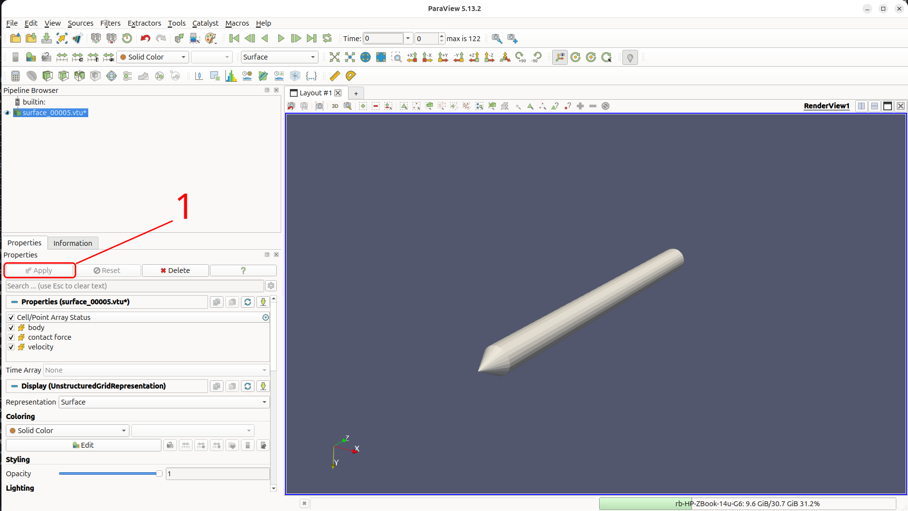
2. Select the triangles of the conical tip. Click Select Cells On (1) in the render-view toolbar (or press S) and drag a box around the conical tip (2), so that its triangles are highlighted in pink and the cylindrical sleeve is not. Hold Ctrl and drag again to add any triangles that were missed.
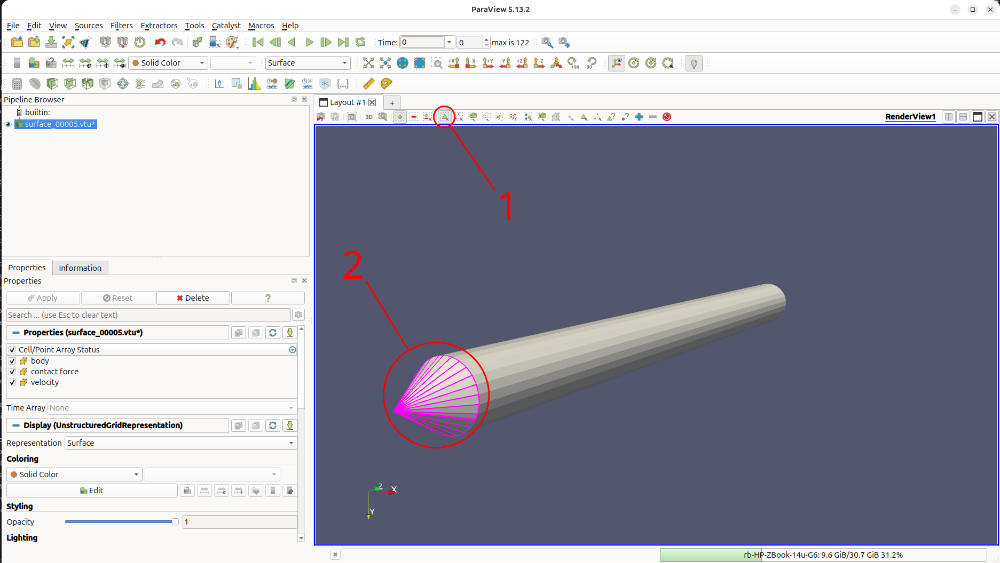
3. Find the Extract Selection filter. Open the Filters menu and choose Search... (1). Ctrl + Space opens the same filter search from anywhere in ParaView.
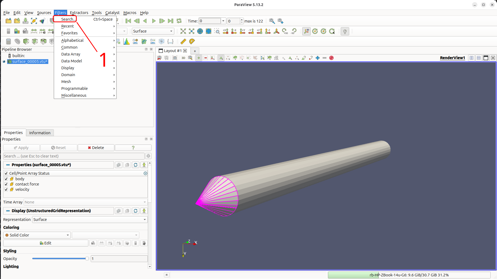
4. Extract the selection. Type extract sel (1), choose Extract Selection (2) and press Enter.
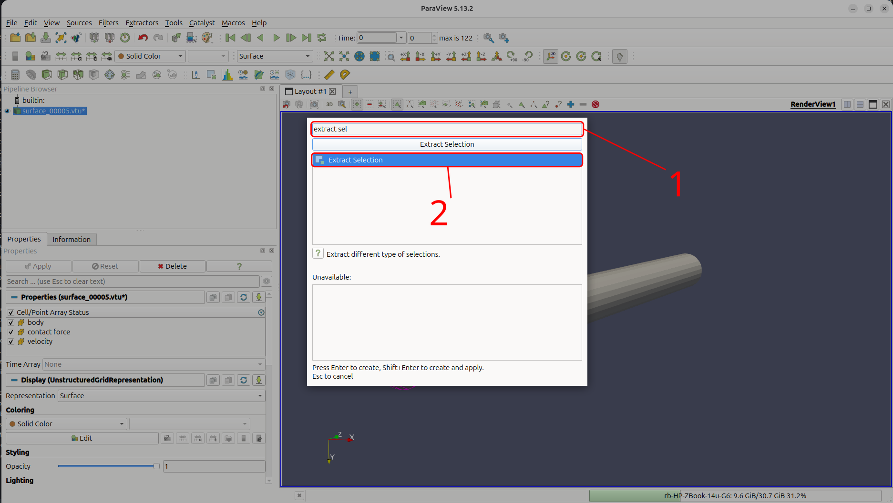
5. Apply it, then select the tip point. ExtractSelection1 appears in the Pipeline Browser; click Apply. It holds only the triangles of the tip. Then (1) click Clear Selection to remove the selected triangles, and (2) click Select Points On (or press D) and drag a small box around the very tip of the cone, which is highlighted as a single pink point.
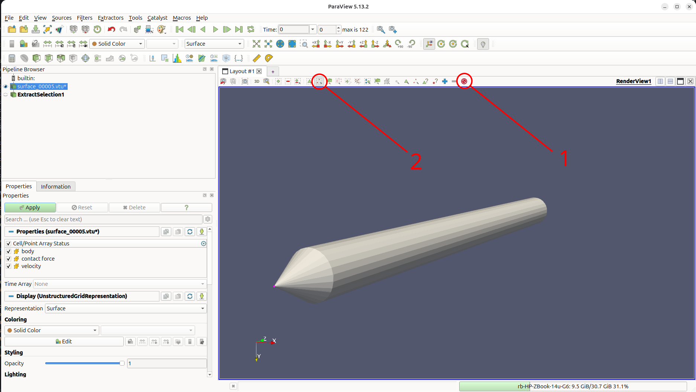
6. Extract the tip point and name the two extracts. Apply Extract Selection again to extract the tip point. Right-click each extract in the Pipeline Browser (1), choose Rename (2), and call the triangles cone load and the point cone tip.
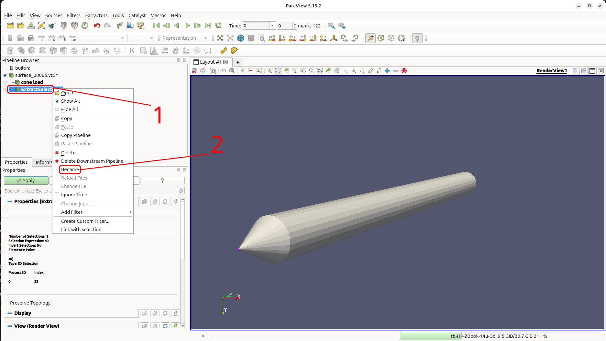
7. Check the extracts. Hide surface_..vtu with its eye icon (1). Only the conical tip is left.
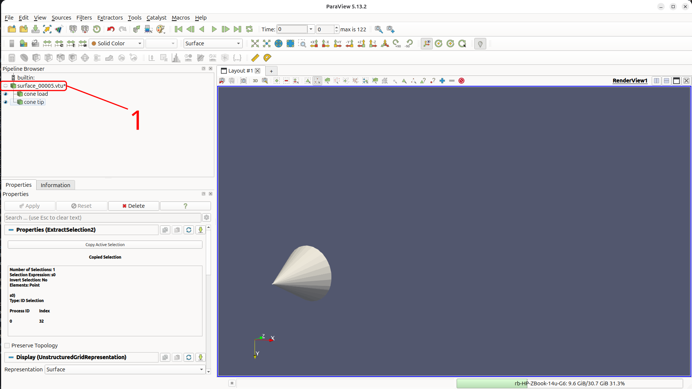
8. Open a layout for the plots. Click + (1) beside Layout #1 to open Layout #2 and choose Line Chart View (2).
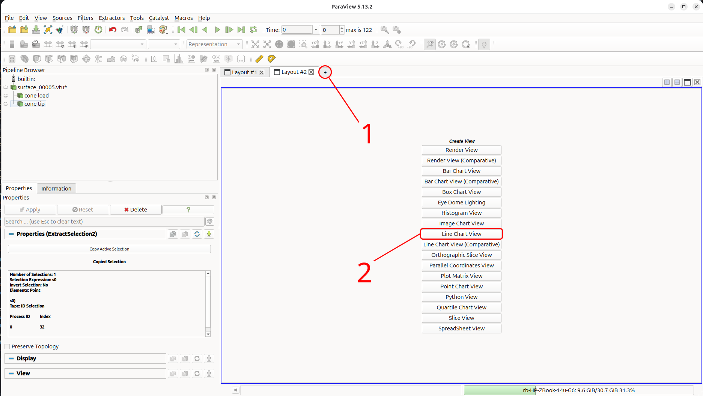
9. Plot the load on the tip over time. Select cone load (1), go to Filters, then Search, and then type plot da (2) and choose Plot Data Over Time (3).
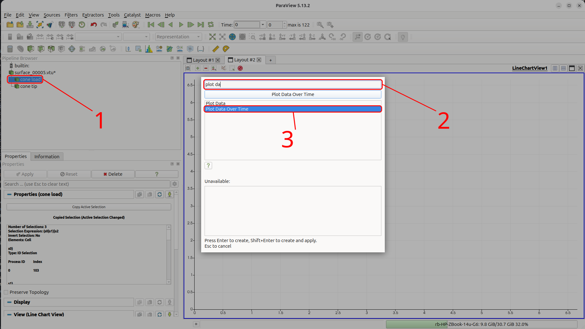
10. Use the cell data. The contact force is stored on the triangles, so set Field Association to Cells (1). Keep Only Report Selection Statistics ticked and click Apply (2). ParaView reads every output step, which takes a moment, and draws a quartile chart.
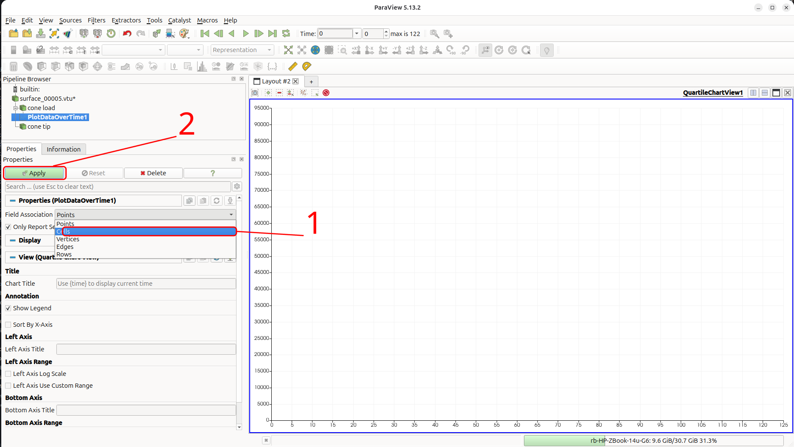
11. Choose the vertical force. In Series Parameters, untick every series except contact force (2) (stats) (1), the \(z\) component. The chart shows its average over the tip triangles, with the spread between them shaded.
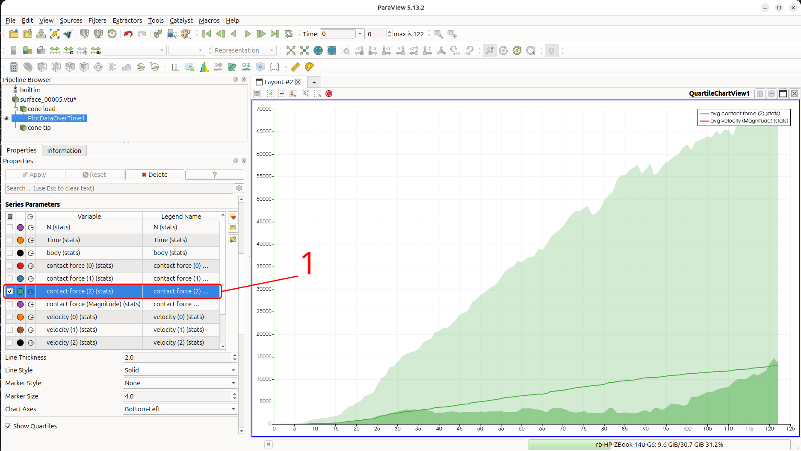
12. Show the total. Further down, untick Show Quartiles (1) and Show Average (2) and tick Show Sum (3). sum contact force (2) (stats) is the vertical force on the tip of the quarter cone, which grows steadily as the cone penetrates.
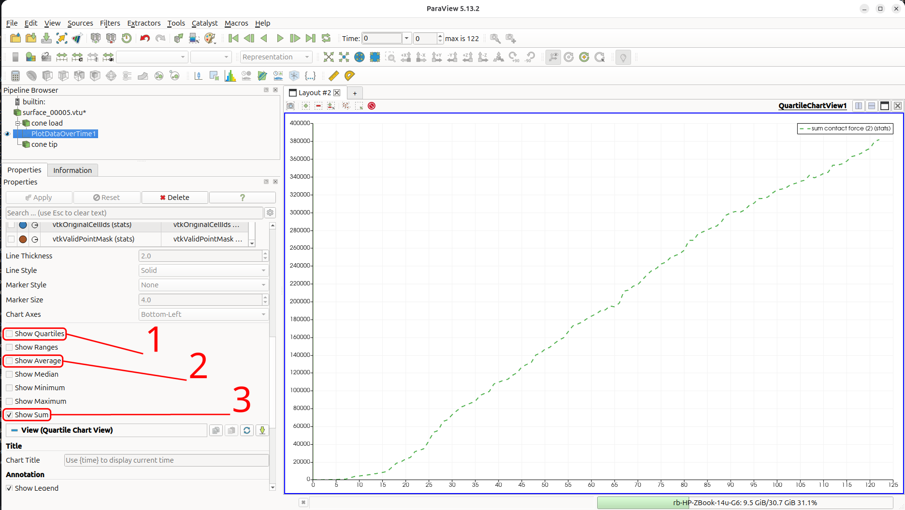
13. Export the load. File → Export View, choose Comma or Tab Delimited Files (1) and save the chart in vtk_CPT_dr32 (2) as load_data.csv (3), then click OK (4).
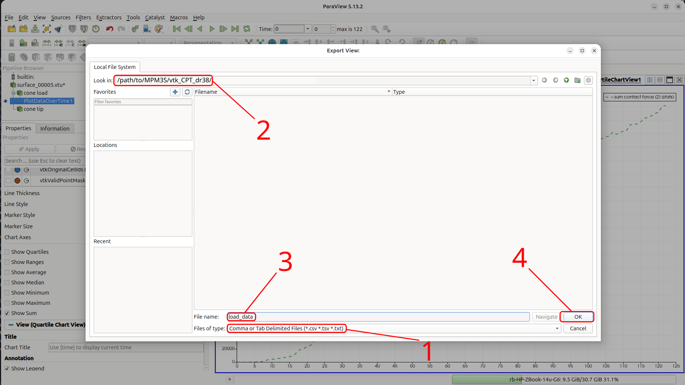
14. Plot the tip height. Select cone tip (1) and apply Plot Data Over Time again, keeping Field Association as Points (2), and show only Z (stats) (3). The tip height is \(0\) in stage 1, jumps to the soil surface at about \(19.85\) m when the cone is placed at the start of stage 2, and then falls steadily as the cone is pushed down. Export it in the same way, as position_data.csv in vtk_CPT_dr32.
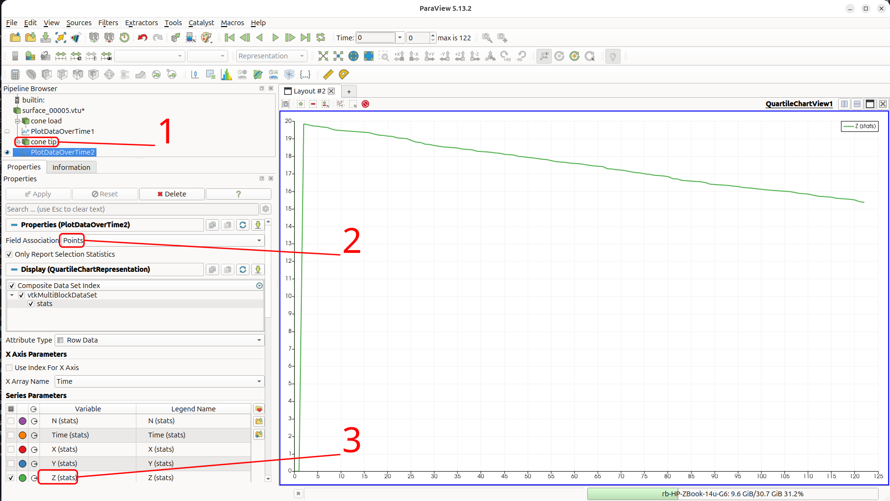
With \(F_{tip}\) the summed vertical contact force from load_data.csv, the tip resistance of the full cone is
and the penetration depth is the height at which the cone is placed on the soil - \(19.8474\) m, the material top in the rigid body surface placement message - minus the tip height from position_data.csv. Both files have one row per output step; the first rows, from stage 1, have a tip height of \(0\) and are skipped.
The short Julia script below plots \(q_c\) against the penetration depth. Run it from the MPM3S folder, either by copying it into the REPL or by saving it as plot_qc.jl and running include("plot_qc.jl"). It needs Plots, installed as described in Tutorial 1. It also plots ten points interpolated from a centrifuge CPT in sand at \(D_r = 38\%\), the data used by Bird et al. 5; the sand in this tutorial is slightly looser, at \(D_r = 32\%\).
using DelimitedFiles, Plots
# the two files exported from ParaView, one row per output step
load, _ = readdlm("vtk_CPT_dr32/load_data.csv", ',', Float64; header=true)
tip, _ = readdlm("vtk_CPT_dr32/position_data.csv", ',', Float64; header=true)
F = load[:, 2] # vertical contact force on the tip of the quarter cone (N)
z = tip[:, 2] # height of the cone tip (m)
# skip stage 1, before the cone is placed on the soil (tip height 0)
s2 = z .> 0
r = 0.4 # cone radius (m)
z_surface = 19.8474 # "material top" in the rigid body surface placement message
depth = (z_surface .- z[s2])/r
qc = 4 .* F[s2] ./ (π * r^2) ./ 1e6 # tip resistance of the full cone (MPa)
# centrifuge CPT in sand at D_r = 38% (Bird et al., 2026): penetration depth (m) and tip resistance (MPa)
depth_ref = [0.45, 0.90, 1.35, 1.80, 2.25, 2.70, 3.15, 3.60, 4.05, 4.50]
qc_ref = [0.101, 0.310, 0.566, 0.820, 1.060, 1.315, 1.567, 1.846, 2.112, 2.356]
plot(qc, depth, yflip=true, label="MPM3S", xlabel="tip resistance q_c (MPa)", ylabel="normalised penetration depth (m/m)", legend=:topright)
scatter!(qc_ref, depth_ref ./ r, label="centrifuge, D_r = 38%", markersize=4)
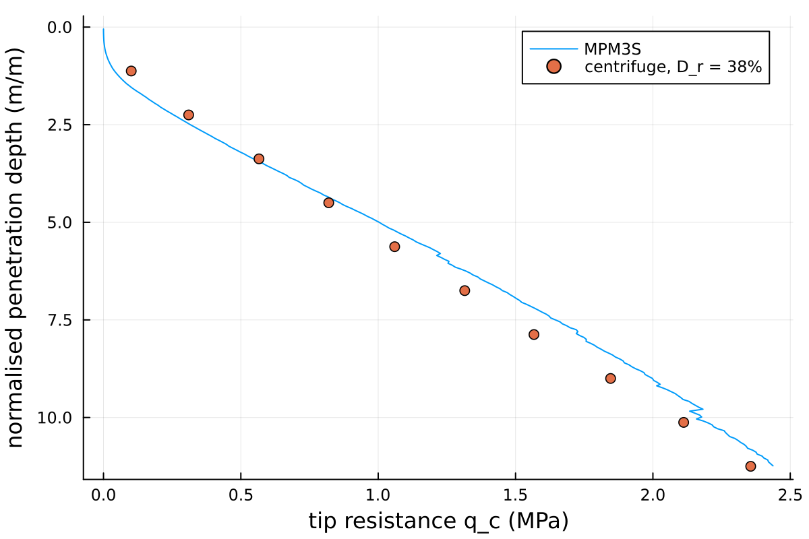
-
C. Davidson, M. Brown, B. Cerfontaine, J. Knappett, A. Brennan, T. Al-Baghdadi, C.E. Augarde, W.M. Coombs, L. Wang, A. Blake, D. Richards, and J.D. Ball. Physical modelling to demonstrate the feasibility of screw piles for offshore jacket supported wind energy structures. Géotechnique, 72(2):108–126, 2022. ↩
-
B. Cerfontaine, J. Knappett, M.J. Brown, C. Davidson, and Y. Sharif. Optimised design of screw anchors in tension in sand for renewable energy applications. Ocean Engineering, 217:108010, 2020. ↩
-
Robert E. Bird, William M. Coombs, Charles E. Augarde, Giuliano Pretti, and Ted J. O'Hare. An implicit octree-based adaptive material point method. 2026. URL: https://arxiv.org/abs/2606.09275, arXiv:2606.09275. ↩
-
R.B.J. Brinkgreve, E. Engin, and H.K. Engin. Validation of empirical formulas to derive model parameters for sands. In Numerical Methods in Geotechnical Engineering, pages 137–142. CRC Press, 2010. ↩
-
Robert E. Bird, William M. Coombs, Michael J. Brown, Charles E. Augarde, Yaseen U. Sharif, Giuliano Pretti, Catriona Macdonald, Duncan Stevens, and Gareth Carter. Three-dimensional modelling of drag anchor penetration using the material point method. Ocean Engineering, 358:125456, 2026. ↩